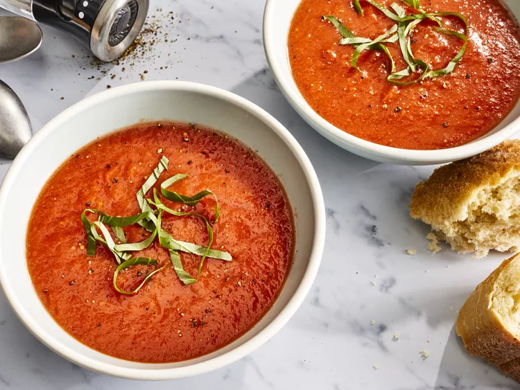
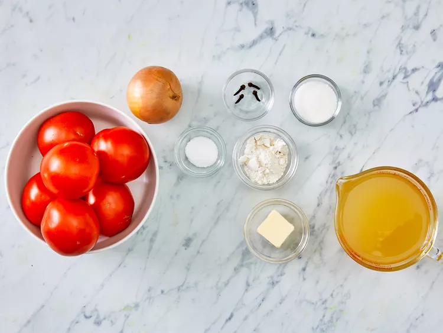
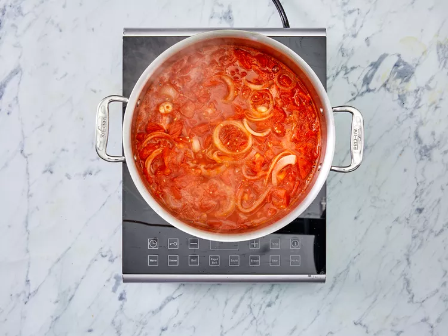
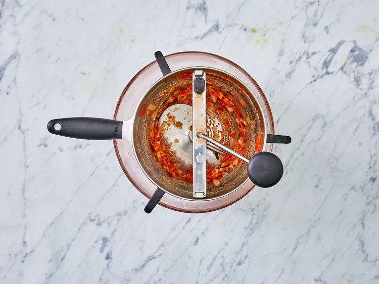
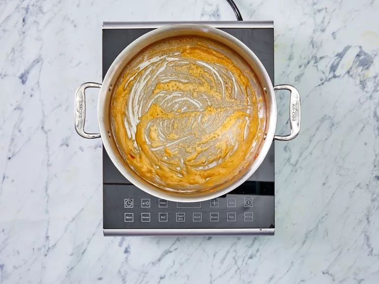
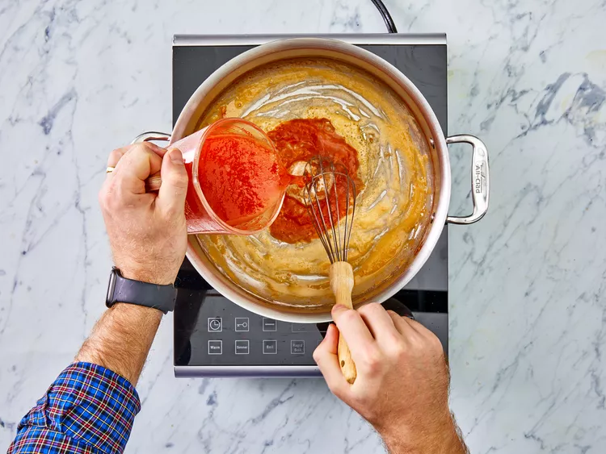
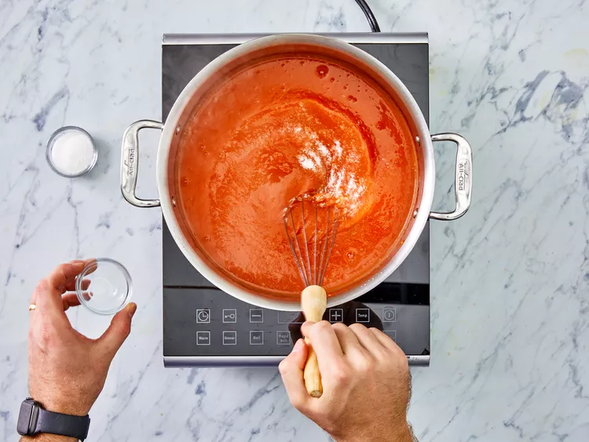

Fresh Tomato Soup

Description
After making the Grilled Cheese Sandwich, you may be looking for a suitable side.
Tomato Soup is not only a classic, but also a very tasty, flavorful, and time-consuming
side dish - so your guests will know that they are appreciated!
Ingredients
- 4 cups chopped fresh tomatoes
- 1 slice onion
- 4 cloves garlic
- 2 cups chicken broth
- 2 tablespoons butter
- 2 tablespoons all-purpose flour
- 1 teaspoon salt
- 2 teaspoons white sugar, or to taste
Steps
- Gather all ingredients.

- In a stockpot, over medium heat, combine the tomatoes, large slice of onion, garlic
cloves, and chicken broth. Bring to a boil, and gently boil for about 20 minutes
to blend all the flavors.

- Remove from heat and run the mixture through a food mill into a large bowl, or
pan. Discard any stuff left over in the food mill.

- In the new empty stockpot, melt the
butter over medium heat. Stir in the flour to make a roux, cooking until the roux is
a medium brown.

- Gradually whisk ina bit of tomato mixture, so that no limps form, then stir in the rest.

- Season with sugar and salt, and adjust to taste.
